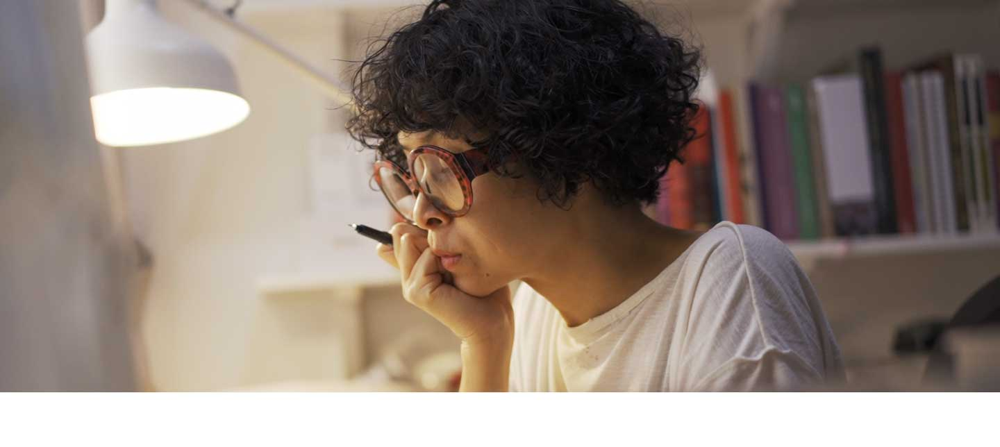

Melissa Sunjaya is an Indonesian visual artist based in Jakarta who loves drawing, writing, and sewing. In 2010, she founded Tulisan -a grassroots artisanal label publishing handmade serigraph editions created sustainably and ethically. Her work explores Southeast Asian women's identities through Illustrated wearable artefacts. Using an autoethnographic approach and historical archives to probe the influence of class, gender, race, and disability within Indonesian culture, Melissa creates new art and gives a voice to the marginalised and unremembered women in history.
Film DocumentaryContact
Exhibition
- EMPATHY, ETHICS, & WEALTH
SALIHARA ART CENTER
Curator of Visual Lab Pedagogy & Explorations based on Heuristic Studies - BIO FANTASY
Jakarta, Indonesia
Travelling Solo Exhibit: A Visual Essay Installation of Chairil Anwar's Poetry and Proses - PEPE & THE FLYING BALLOON
A Musical Rendition of Melissa Sunjaya's Short Story - HOTEL BATAVIA
Solo Exhibit of Time Capsule & Musical Rendition of Melissa Sunjaya's Short Story - AMMA SUPAHILO
Solo Exhibit of Single Edition Serigraphy Series
Literary
- DADI
Genre: Non-Fiction
A silent tale is a sequence of wordless pictures where the readers can play with the narratives and arrange the mood and tone of the story - GROW
Genre: Fiction
An Educational Fiction on Cyber-Bullying and Decision Making - SURAT NO. 03: LELONO
Genre: Non-Fiction
An Essay on Serialism Amongst Polarity of Cultures and Doctrines - SURAT NO. 02: PERSINGGUNGAN
Genre: Non-Fiction
An Essay on Human Nexus in Cyber-Industrial Revolution - SURAT NO. 01: TARI PULSAR
Genre: Non-Fiction
An Essay on Human Behaviours and the Impact of an Anthropocentric Universe - BIO FANTASY
Genre: Poetry and Science Fiction
A Sci-Fi Argumentative Prelude to a Visual Anthology of Chairil Anwar's Poetry and Prose - DREHER
Genre: Non-Fiction
A Biography and Legacy of Gerd Dreher, a German Gemstone Master Carver - LES PAPILLONS DE VICTOR
Genre: Fiction
A Children's Book on Empathy and Unconditional Love - DREAM OF FLIGHT
Genre: Illustration
An Illustrated Journal, Published by Chronicle Books, San Francisco, U.S.A.
Awards & Recognitions
- BCA MARKETEERS WOMAN AWARD | 2016
Influential and Aspiring Women - SULWHASOO X HER WORLD AWARD | 2015
The Most Powerful Women and Young Achievers - ERNST & YOUNG AWARD | 2013
Ernst and Young Entrepreneurial Winning Women - INDOSAT APPRECIATION AWARD | 2012
Indonesia's Inspiring Youth and Woman - CIMB NIAGA CLICK SOCIETY AWARD | 2011
Young Online Entreupreneur 2011, Second Price - SALONE SATELLITE AWARD | 2000 & 2001
10 Best Young International Designers